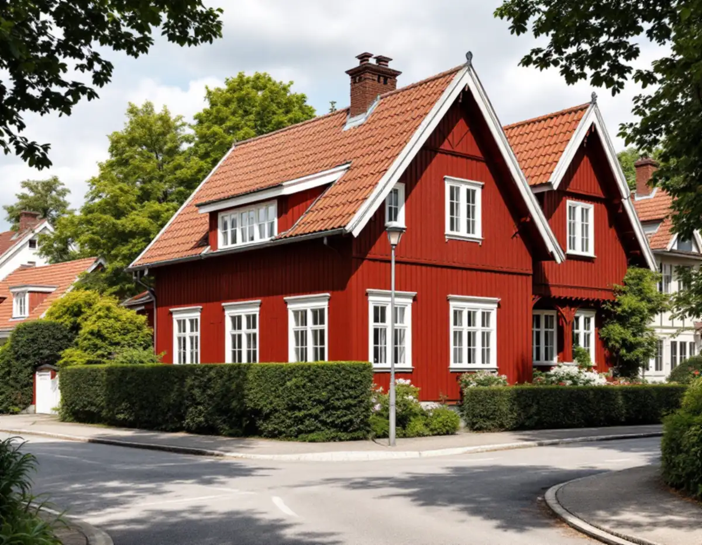
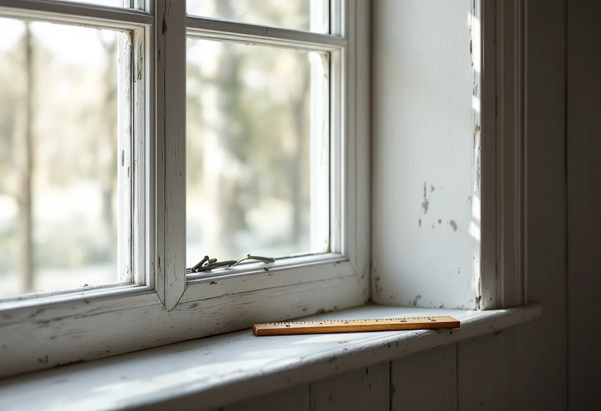
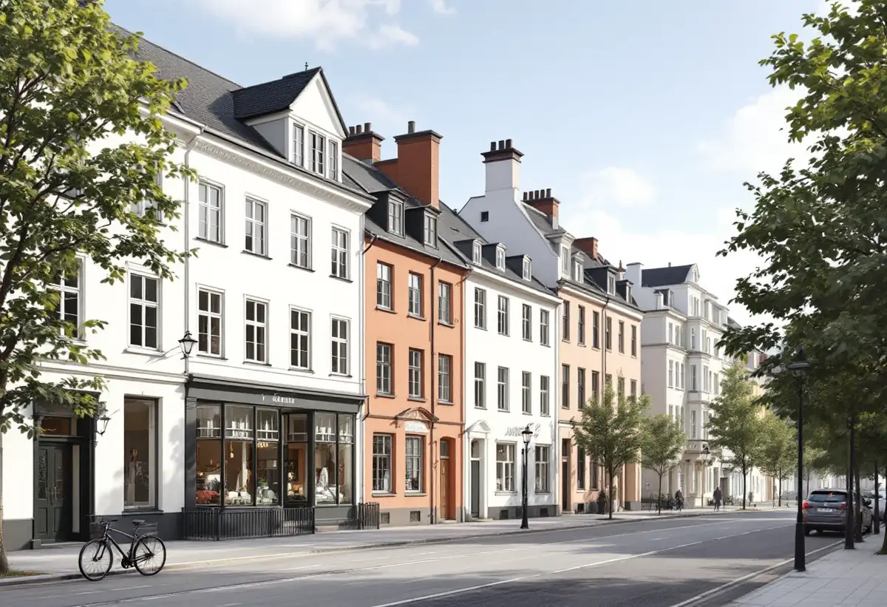

Platsbesök
Gratis besök där vi mäter och fotograferar fönstren.
Gamla Enskede är riksintresse för kulturmiljövården, och fönstren räknas uttryckligen till det som gör området värdefullt. Därför kräver ett fönsterbyte där bygglov även på en villa. Geal Entreprenad AB byter fönster i Enskede och tar fram ritningar och beskrivning så att de nya fönstren håller samma indelning och proportioner som de gamla.

Översiktsplanens riksintressedel beskriver Gamla Enskede som Stockholms första trädgårdsstad, påbörjad 1908 och en föregångare på det bostadssociala området med landets första radhus. Stadsdelen har cirka 10 000 invånare och omfattar nära 300 hektar. Bland de värdebärande karaktärsdragen räknas de enskilda husens ursprungliga byggnadsdetaljer, som fönster, entrédörrar och räcken.
Stockholms stad skriver att bygglov krävs för åtgärder som annars kan vara lovbefriade när huset ligger inom ett riksintresse för kulturmiljövården, som visas med blå ring på Stadsmuseets karta. För en villa i Gamla Enskede betyder det att även ett fönsterbyte som skulle ha varit lovfritt i ett annat område behöver prövas.

På stadens sida om fönster och dörrar räknas bland annat dessa ändringar upp: att byta material eller kulör, att ändra storlek eller placering, att ändra dimensioner, proportioner eller profilering på karmar, bågar och spröjs, att byta upphängning, till exempel från sidohängda fönster till vippfönster, och att ändra indelningen genom att lägga till spröjs eller ta bort en mittpost. Staden påpekar att en byggnad kan ha karaktäristiska fönster eller en tidstypisk indelning där ändringen påverkar både fasaden och husets karaktär.
Vi mäter därför upp de befintliga fönstren noggrant och ritar de nya med samma luftindelning, spröjs och profiler. Beskrivningen av material och kulör bifogas ansökan. Är fönstren i så gott skick att de kan räddas finns alternativet fönsterrenovering i Enskede.
Riksintressedelen beskriver bebyggelsen som två- och trevånings affärs- och bostadshus längs de breda gatorna i områdets ytterkanter, och nationalromantisk egnahemsbebyggelse vid de smalare gatorna inne i området. Stadens områdesfakta för 2025 räknar 5 117 bostäder i Gamla Enskede. 898 av dem är småhus med äganderätt, 2 360 är bostadsrätter och 1 331 hör till allmännyttan.
Det gör att två grannar i Enskede kan stå inför helt olika fönsterbyten. Villaägaren beställer själv och söker bygglov. I ett flerbostadshus är det föreningen eller fastighetsägaren som beställer, och då krävs bygglov för ändringar på fasader mot allmän plats även utanför riksintresset. Vi tar fram underlaget i båda fallen.
Stadens vägledning Varsam utveckling av småhus- och villaområden markerar också Enskede gård och Enskededalen som kulturhistoriskt värdefulla miljöer, och för Enskededalen finns ett äldre miljöprogram. Vägledningen beskriver att 1920-talets klassiska formspråk blev rådande i bland annat Enskededalen, med enkla volymer i ett och ett halvt plan och symmetriskt uppbyggda fasader.
Staden skriver att äldre miljöprogram och typritningssamlingar inte har någon juridisk status i bygglovsprövningen, men att de är ett bra underlag för att förstå områdets karaktär. Vi använder dem när vi ritar nya fönster, så att de passar huset de sitter i. Mer om tjänsten finns under fönsterbyte.

Gratis besök där vi mäter och fotograferar fönstren.
Vi kontrollerar riksintresset och Stadsmuseets klassning.
Fasadritning och detaljritning med samma indelning.
Du söker lov med vårt underlag.
Fönstren tillverkas efter uppmätning.
Byte, drevning, tätning, foder och bleck.
I ett småhus räknar Skatteverket det som rotarbete att reparera eller byta ut fönster, att montera bullerglas och isolerglas och att byta fönsterbleck. Är bostaden yngre än fem år får arbetet bara återställa det ursprungliga skicket, och nytt material ska vara likvärdigt med det gamla.
Avdraget är högst 30 procent av arbetskostnaden och högst 50 000 kronor per person och år. Material och resor ger inget avdrag, och Geal drar avdraget direkt på fakturan.
Antal och storlek på fönstren, spröjs och luftindelning, profiler och glas, om fönstren tillverkas efter uppmätning, bleck och foder och om bygglovsritningar behövs. Efter ett gratis platsbesök får du ett skriftligt kostnadsförslag.
Byta eller renovera fönster.
Fönsterbyte i Stockholm →Takbyte, takbesiktning och plåtarbeten.
Takläggare i Enskede →Trädgårdsstad med lertegel.
Takrenovering i Enskede →Trädgårdsstaden, kartan och lovet.
Attefallshus i Enskede →Typhus i trä, träbjälklag och bostadsrätt.
Badrumsrenovering i Enskede →Byggplatsen, gatan och träden.
Byggföretag i Enskede →Trädgårdsstadens kulörer.
Fasadmålning i Enskede →Trähus, putsade typhus och småstugor i Enskede.
Fasadrenovering i Enskede →Trädgårdsstadens fönster.
Fönsterrenovering i Enskede →Lut, såpa och olja på fur och gran.
Golvläggare i Enskede →Slipa fram gamla brädgolv i villan.
Golvslipning i Enskede →Typhus, dubbelhus och småstugor.
Köksrenovering i Enskede →Trädgårdsstad, egnahem och småstugor i Enskede.
Målare i Enskede →Snörasskydd, rännor och verandaplåt i Enskede.
Plåtslagare i Enskede →Verandor, entréer och bodar i trädgårdsstaden.
Snickare i Enskede →Takfallet, höjden och riksintresset.
Takbyte i Enskede →Tapet i vindsrum och snedtak.
Tapetsering i Enskede →Små tomter och riksintresse.
Tillbyggnad i Enskede →Renovera innan ni flyttar in.
Totalrenovering i Enskede →